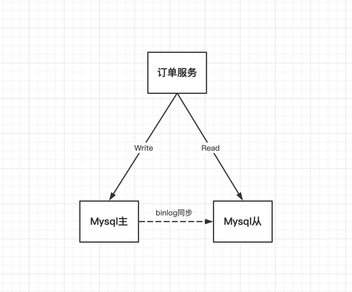

# 分布式事务
https://blog.csdn.net/zzti_erlie/category_11350690.html
# 分布式事务
# setata服务端: 需要sql ： seata-server.sql
https://github.com/seata/seata/blob/1.2.0/script/server/db/mysql.sql
# 每个业务库都需要 undo_log
https://github.com/seata/seata/blob/1.2.0/script/client/at/db/mysql.sql
# TC 、 TM 、 RM
TC : Transaction coordination： 事务协调器
维护全局和分支事务的状态，驱动全局事务提交或回滚。
TM : Transaction Management: 事务管理器
定义全局事务的范围：开始全局事务、提交或回滚全局事务。
RM : Resource Management : 资源管理器
管理分支事务处理的资源，与注册分支事务的状态、并且驱动分支事务提交或回滚
2
3
4
5
6
# 2PC （两阶段提交协议、也成为 XA） 、 3PC （三阶段提交协议）
- 一阶段事务提交（传统）数据库事务
1. 如果只有一个DB资源，那么在mysql中使用 begin、commit就能实现
2. 在spring中，一个注解 @Transactional ，如果发生了嵌套事务（一个方法中有另外一个方法操作资源！！），它的实现方式本质是通过 ThreadLocal 向下传递，若应用中有子线程相关的事物需要协调管理，它无法处理！！
2
3
- 2PC: Two Phase Commit Protocols 两阶段提交协议 ： 它实际上指的是两个分布式协调阶段
阶段1 事务管理器（单个）通知资源管理器（多个db）准备开始执行事务，并且锁住对应的资源（直到提交、回滚之后才会释放），当准备完毕，资源管理器回复通知给事务管理器，并且写入 undo / redo 日志 （undo 是记录操作之前，redo是操作时候的数据）
阶段2 若所有的资源都准备成功，事务管理器会要求所有的资源管理器进行提交操作，若有任意一资源管理器准备（第一阶段）失败，则事务管理器会要求所有的资源管理器回滚（第二阶段）
问题：
1. 单点故障问题 （SPOF：Single Point Of Failure）： 事务管理器可能故障，存在用于完成不了的事务。
2. 阻塞问题： 阶段1中对资源是采用了锁的方式，可能出现锁无法释放的问题和竞争锁的问题。
2
3
4
5
6
7
8
- 3PC: Three Phase Commit Protocols 三阶段提交协议
3pc 最显著的一个特点是加入了一个超时机制，
3pc 较于 2pc ，多了一个步骤就是 询问阶段（can commit） ，这个阶段是不会锁资源的，所以没有2pc的第一阶段的阻塞情况。
Can Commit: 询问是否可以提交，不会加锁
Pre Commit: 加入了超时机制，如果超时则认为失败
Do Commit: 若干preCommit 超时了，则就是需要回滚操作，不会因此而阻塞
2
3
4
5
6
# 分布式事务解决方案： XA、TCC、AT 、SAGA
- XA： 2PC也叫做XA

流程：
1. 订单服务操作下的两个数据源，一个订单表，一个库存表
2. 订单服务通过嵌入的TM通知 订单RM 生成订单数据，同时通知 库存RM 扣减库存数据，此时两个RM都没有提交事务，所以订单和库存都是锁定的状态
3. TM收到两个RM的执行消息，只要有一方失败了，TM则通知RM回滚事务执行回滚，资源锁释放，若都成功，则TM通知所有RM提交事务，资源锁释放
问题：
1. 两个阶段需要同时成功，否则同时锁定多个资源不释放，性能较差
2. 数据库需要支持 XA 协议
解析：
整个事务流程涉及到三个角色： AP 、 RM 、 TM
其中AP指的是使用2PC的分布式事务的应用程序
RM是资源管理器，管理分支事务
TM是全局事务管理器，决定分支事务提交、回滚
2
3
4
5
6
7
8
9
10
11
12
13
14
15
16
- TCC : Try 、 Confirm 、 Cancel

TCC 主要分为三个操作
Try: 一阶段业务资源的检查和预留资源
Confirm: 二阶段提交操作，所有的Try都成功了，则执行 Confirm的操作，Confirm真正执行业务，使用Try的预留的资源
Cancel: 二阶段回滚操作，有一个Try失败了，则执行Cancel操作，Cancel释放Try的预留的资源
2
3
4
- AT:
1. Seata的AT模式，是Seata主推的模式，Seata的AT模式是无侵入的分布式事务模式。事务的1阶段和事务的2阶段均有Seata框架完成，
SQL解析作为阶段1，阶段2由框架自动生成提交、回滚操作
2
- AT: Seata-AT的工作机制：
表结构：product
Field Type Key
id bigint(20) PRI
name varchar(100)
since varchar(100)
若被全局事务管理的业务逻辑sql为： update product set name = 'GTS' where name = 'TXC';
***** 阶段一 *****
1. 解析sql，得到sql的类型（update）、表（product）、条件（name='TXC'）等信息
2. 根据a解析的sql，查询执行前镜像： select id, name, since from product where name = 'TXC';
得到数据：
id name since
1 TXC 2014
3. 执行业务sql，update的操作，即第1点的sql
4. 查询更新之后的数据：根据id查询
id name since
1 GTS 2014
5. 将插入之前的数据镜像，和插入之后的数据镜像都插入到undo_log中（回滚日志）
6. 本地事务提交前，向TC注册分支事务，申请 product 表中的 id=1 的记录的 全局锁
7. 本地事务提交，业务数据更新，并且把之前 undo_log 的数据一并提交
8. 将本地事务提交的结果上报给TC
***** 阶段二 - 提交 *****
1. 收到 TC 分支事务提交的请求，提交本地事务，并且把提交结果上报给TC
2. 提交成功之后，批量删除undo_log的记录
***** 阶段二 - 回滚 *****
1. 收到 TC 回滚的请求，开启一个本地事务，通过xid和BranchID 找到对应的 undo_log 记录
2. 拿到 undo_log 记录判断 前后的数据镜像是否一致，不一致则根据配置需要处理
3. 生成处理的sql ：把阶段1的更改的记录更改回前数据镜像，随后提交本地事务给 TC
2
3
4
5
6
7
8
9
10
11
12
13
14
15
16
17
18
19
20
21
22
23
24
25
26
27
28
29
30
31
32
33
34
35
36
37
38
39
40
41
- SAGA ： 长事务解决模式，Long Lived Transaction
1. 在分布式事务下，有多个参与者。依次执行各参与者的正向操作，若所有的操作均成功，则分布式事务提交。如果一个参与者的正向操作失败，则分布式事务回滚
优点 ：
1. 并发度高，无锁，高性能
2. 开发量大，需要定义正向操作和补偿操作
3. 不能保证隔离型
2
3
4
5
6
# 分布式事务解决方案之 本地消息表

1. 订单服务执行保存订单入库、推送扣减库存消息给MQ（可以实时投递MQ也可以定时任务扫描消息记录表的未扣减状态进行投递消息），并且保存消息记录表记录（此时消息记录状态为未扣减），
因为订单入库和消息记录入库是同一个本地事务，所以不存在分布式事务。
2. 库存服务订阅了MQ的订单服务发送的消息，收到消息后执行扣减库存的操作（本地事务）
3. 库存服务扣减库存成功，随即投递消息给MQ，订单服务库存订阅此消息后，收到消息通知，修改消息记录表的状态。
缺点：
1. 需要写入消息表，增加数据库的IO压力
2. 需要MQ第三方件协同，并且需要考证消息投递可靠，消费可靠性（消息一致性）
3. 过多的业务代码，耦合性加重
2
3
4
5
6
7
8
9
10
# Seata实现2PC与传统2PC的差别
架构层次方面：
1. 传统 2PC 方案的 RM 实际上是在数据库层，RM 本质上就是数据库自身，通过 XA 协议实现，
2. Seata 的 RM 是以 jar 包的形式作为中间件层部署在应用程序这一侧的。
两阶段提交方面：
1. 传统 2PC无论第二阶段的决议是 commit 还是 rollback ，事务性资源的锁都要保持到 Phase2 完成才释放。
2. Seata 的做法是在 Phase1 就将本地事务提交，这样就可以省去 Phase2 持锁的时间，整体提高效率。
2
3
4
5
6
# seata分布式事务
- 工作流程：


1. TM 向 TC申请开启一个全局事务，TC创建一个创建一个全局事务，并且返回一个全局事务的xid，这个xid在微服务的链路中上下文传递
2. RM 向 TC 注册分支事务，分支事务的xid是上面那个全局事务的xid，因此可以通过xid获取到全局事务和分支事务
3. TM 向 TC 发起针对全局事务的xid为全局提交获取全局回滚操作
4. TC 协调 xid下的分支事务的提交或回滚操作
2
3
4
5
6
# 分布式事务产生的场景

1. 微服务场景下，远程调用系统，跨JVM产生产生分布式事务
在单体应用中，一个业务操作需要调用多个模块完成的，此时的数据一致性是用本地事务来保证的
而在微服务调用中，产生了系统和系统之间调用，就必然会产生分布式事务的问题
2. 单体访问多个数据库产生分布式事务
3. 多个系统访问同一个数据库： 跨JVM
本质： 都是因为产生了不同的数据库会话（session）操作数据库
2
3
4
5
6
7
8
9
10
# 分布式理论相关
在单个数据库的性能存在瓶颈的时候，我们可能会对数据库进行分库，数据库多个库存在不同的服务器上， 这个时候单机数据库的事务ACID不适应这种情况了，而且在ACID事务下集群实例想要保证各个应用的数据统一也比较难达到。 这个时候需要引入一个新的理论规则来应对上述情况，这个理论就是CAP原则（定理）
# CAP：
- CAP：
C： Consistency ： 一致性
A： Available ：可用性
P： Partition Tolerance： 分区容忍性
2
3
- 现举例来理解 CAP 理论 
场景：
1. 订单服务 新增、修改、删除的请求打到mysql主库
3. 从库异步请求主库根据主库binlog日志异步同步数据到从库
2. 订单服务查询最新的订单信息， 查询 的请求打到mysql从库
Consistency: 一致性
目标：
如上的场景中下，订单的读、写满足的一致性就需要： 订单写入主库成功，订单查询从库能取出最新的信息，若失败，则无法查询到最新的数据
实现一致性：
1. 写入主库成功之后，需要同步到从库
2. 在同步期间，需要锁定从库，因为数据没有同步完成，等同步完成后释放锁。这样避免了同步期间（耗时长），读取的数据是不是订单系统插入主库最新的数据
Available: 可用性
目标：
1. 订单写入主库成功响应
2. 订单查询从库成功响应，并且不会存在阻塞的情况，立即响应，不管数据是否最新！
实现可用性：
1. 主库同步数据到从库
2. 从库在同步期间不锁定，立即响应数据给订单服务。
Partition Tolerance： 分区容忍性
目标：
1. 从库在同步主库的binlog中若失败，不会影响读的操作，也不会影响主库写的操作
2. 其中一个节点down后，不会影响另外一个节点提供服务
实现：
1. 从库同步binlog的方式采用异步更新，
2. 一主多从（冷备），双主多从（热备）的模式
2
3
4
5
6
7
8
9
10
11
12
13
14
15
16
17
18
19
20
21
22
23
24
25
26
27
28
29
30
31
32
33
34
- CAP理论在实际中的满足情况：
前提：
在有P的情况下Consitency和 Available是不能共存的！因为保证一致性的情况下，就必须要加上锁，加锁之后就会有响应不及时，导致 Available 无法满足 ！！
也就是说，在mysql集群模式下，C和A是无法共存的！若mysql是单机的情况CA可以共存，但是存在mysql单点故障的情况 ！！
常见搭配：
CP： 一致性，分区容忍性 均满足，：要求强一致性，比如zookeeper追求的强一致性，比如跨行转账，一次转账要求双方银行都完成了整个事务才算完成
AP： 可用新，分区容忍性 均满足 ： 常用，一些业务场景比如：订单退款，今日退款成功，明日账户到账，只要用户可以接受在一定的时间内到账即可。
CA： 一致性，可用性 均满足 ： 即mysql单点统一提供读写
2
3
4
5
6
7
8
9
10
11
12
# BASE 理论：
在分布式系统中，我们需要保证系统的可用性，这个的重要性会比数据一致性要高。 分布式系统需要实现高可用性，需要保证系统满足BASE理论
Base Available： 出现故障后，保证核心系统可用，不影响核心的系统可以故障
Soft status ： 数据的中间的中间状态，比如订单退款中，但是这个数据的最终状态是成功！
Eventually ： 会有一定的延迟，担数据最终一致！
BASE理论是对CAP中一致性和可用性的中和权衡的结果，实际上并无法做到强一致性，但每个应用的业务特点，采用属于系统合适的规则最终达到一致性。
# 数据库事务
事务本质上来说是多个操作，其中要么所有操作都成功，要么全部失败！
特性： ACID
A: Atomicity ：原子性： 整个事务是不可分割的部分，要么全部成功，否则全部失败。即执行发生异常sql的之前的sql也需要回滚，不管其已经成功 ！！
C: Consistency：一致性： 数据的完整性和业务一致性。比如银行转账的时候，不管如何转账，总额是不变的。
I: Isolation：隔离性： A事务不会影响B事务
D: Durabilily ：持久性： 所做的修改最终都会落到数据库上，不会因为系统故障导致数据丢失
2
3
4
5
# 并发事务导致的问题
多个事务并发运行，经常会操作相同的数据来完成各自的任务（多个用户对同一数据进行操作）。并发虽然是必须的，但可能会导致以下的问题。
名词解释：
不可重复读： 两次读取数据在中途中被修改。比如 A事务多次读了同一个数据，但是A事务还未结束，此时B事务也访问该数据，在A事务中的读该数据之间，B事务执行并且提交了，这就导致A事务里的在B事务提交之后读出来的数据和一开始读的数据不一致。
存在的隔离机制为：读已提交、读未提交，解决办法：使用可重复读隔离机制。
脏读：读到了未提交的数据，也就是本应该提交后才能的读取的数据，在未提交就被提前读取了。
比如：A事务正在对数据进行修改，但是还未完成其事务，未提交变更后的数据，但是此时B事务也访问到了该数据，读取出来的数据是A还未提交前的数据（不是A事务修改后最新的），所以此时B事务读取到了“脏数据”，因此B对该脏数据的操作也可能是不正确的。
存在的隔离机制为读未提交，解决办法：使用读已提交的隔离机制。
幻读：在同一个事务内，同一条sql语句在不同时间段内查询出来的数据不一样。 解决办法：innoDB引擎的间隙锁。
当MySQL InnoDB引擎在一行行扫描的过程中，不仅会给行加上行锁，还会给行的两边的空隙也加上间隙锁。由于间隙锁（gap lock）仍在存在一些问题，可能会降低并发度和仍然可能导致死锁。
因此，MySQL InnoDB为间隙锁引入了一个补充：next-key lock。所谓next-key lock，它是间隙锁和行锁的合体，每个next-key lock都是前开后闭区间，如 (0,5]。
间隙锁都是开区间，如 (0,5)。next-key lock帮助MySQL在默认隔离级别下解决了幻读问题，因此它也是MySQL加锁的基本单位。
2
3
4
5
6
7
8
9
10
11
1.隔离机制可能会产生的问题：

读未提交： 幻读、脏读、不可重复读
读已提交： 幻读、不可重复读
可重复读： 幻读
可串连化：
2
3
4
2.SQL的隔离机制：
读已提交：SQL Server和Oracle默认隔离机制。 （不可重复读）
设置 ： set transaction_isolation='read-committed';
事务A 事务B
1 begin
2 select name from user where id = 1 => 结果为 '李四'
3 update user set name = '张三' where id = 1
4 select name from user where id = 1 => 结果为'李四'
5 commit
6 select name from user where id = 1 => 结果为'张三' （事务B只能读取到事务A已经提交的数据）
读未提交：可以读取到未提交的数据。
极少使用该机制，可能出现脏读，幻读
设置 ： set transaction_isolation='read-uncommitted';
事务A 事务B
1 begin
2 select name from user where id = 1 => 结果为 '李四'
3 update user set name = '张三' where id = 1
4 select name from user where id = 1 => 结果为'张三' (这sql能读取到事务A的未提交的数据'张三')
5 commit
6 select name from user where id = 1 => 结果为'张三'
可重复读：Mysql默认隔离机制。
在可重复读隔离级别下，事务B只能在事务A修改过数据并提交后，自己也提交事务后，才能读取到事务B修改的数据。（参考images/可重复读.png）
可重复读隔离级别解决了脏读和不可重复读的问题，但可能发生幻读问题。
提问：为什么上了写锁（写操作），别的事务还可以读操作？
因为InnoDB有MVCC机制（多版本并发控制），可以使用快照读，而不会被阻塞。
可串行化：
读读操作不会阻塞
读写操作会阻塞写操作
写读操作会阻塞读操作
写写操作会阻塞写（后）操作
不可重复读和幻读的区别：
不可重复读注重的是修改，幻读注重的是新增、删除
不可重复读：A事务中查询张三的银行卡余额为300块，此时A事务操作还未结束，B事务执行了公司发工资给张三增加了200块，此时张三银行卡的为500块，B事务结束并提交。此时A事务后续操作再读张三的银行卡余额发现张三此时有500块
幻读：工资表中工资大于3000的总共有4人。此时事务A读取到了工资大于3000的有4个人，事务B插入了一条工资大于3000的数据到工资表中，此时事务A再读会发现有5个人工资大于3000
2
3
4
5
6
7
8
9
10
11
12
13
14
15
16
17
18
19
20
21
22
23
24
25
26
27
28
29
30
31
32
33
34
35
36
37
38
39
40
3.设置隔离机制：
方式1：通过set命令
SET [GLOBAL|SESSION] TRANSACTION ISOLATION LEVEL level;
其中level有4种值：
level: {
REPEATABLE READ
| READ COMMITTED
| READ UNCOMMITTED
| SERIALIZABLE
}
关键词：GLOBAL
SET GLOBAL TRANSACTION ISOLATION LEVEL level;
* 只对执行完该语句之后产生的会话起作用
* 当前已经存在的会话无效
关键词：SESSION
SET SESSION TRANSACTION ISOLATION LEVEL level;
* 对当前会话的所有后续的事务有效
* 该语句可以在已经开启的事务中间执行，但不会影响当前正在执行的事务
* 如果在事务之间执行，则对后续的事务有效。
无关键词
SET TRANSACTION ISOLATION LEVEL level;
* 只对当前会话中下一个即将开启的事务有效
* 下一个事务执行完后，后续事务将恢复到之前的隔离级别
* 该语句不能在已经开启的事务中间执行，会报错的
方式2：通过服务启动项命令
可以修改启动参数transaction-isolation的值
比方说我们在启动服务器时指定了--transaction-isolation=READ UNCOMMITTED，那么事务的默认隔离级别就从原来的REPEATABLE READ变成了READ UNCOMMITTED。
1. 数据库写入数据的时候都是先写入日志的，在执行事务的时候，会先写入redo日志，然后再开始操作数据。数据库操作之前首先日志文件会写入磁盘，若写入中途出现
断电断网的操作，数据库重新启动之后，会根据当前的数据情况进行redo和undo的操作。这样用于保证数据的一致性。
2
3
4
5
6
7
8
9
10
11
12
13
14
15
16
17
18
19
20
21
22
23
24
25
26
27
28
29
30
31
32
33
读已提交：


读未提交：

可重复读：

可序列化

可序列化-读读操作：

可序列化-读写操作：

可序列化-写读操作：

可序列化-写写操作


{kind=link}
# 数据库锁
当数据库有并发事务的时候，可能会产生数据不一致，这个时候需要用锁机制来进行协调和计算。
- InnoDB与MYISAM的最大不同有两点： InnoDB支持事务 InnoDB支持行级锁 MYISAM： 采用表级锁 InnoDB: 支持表级锁和行级锁，默认是行级锁
1.性能上划分： 悲观锁、乐观锁
悲观锁： 假设会发生并发冲突，（考虑到存在并且肯跟会发生的并发冲突下）屏蔽一切可能违反数据完整性的操作，在查询完数据的时候就把事务锁起来，知道事务提交。
实现方式 ： 数据库中的锁机制 （读锁、写锁）
乐观锁： 假设不会发生并发冲突，只在提交的操作检查是否违反了数据完整性，在修改数据的时候把事务锁起来，通过version方式来进行处理
实现方式 ： 版本号方式，或者CAS算法实现
2
3
4
5
6
7
2.操作类型划分：（读锁和写锁都是悲观锁）
读锁（共享锁、S锁(Shared) ）： 针对同一份数据，多个读操作可以同时进行而不会互相影响。
写锁（排他锁、X锁(eXclusive) ）：当前写操作没有完成前，它会阻断其他写锁和读锁。
2
3.数据操作的粒度：
表级锁： （颗粒度最大的锁）对整个表加锁，实现简单，资源消耗少，别大部分Mysql引擎支持（MYISAM 和 InnoDB均支持 表级锁），表级锁定氛围共享锁（读锁）和拍他锁（写锁）
特点： 开销小，加锁快，不会出现思索，锁定颗粒度大，发出锁冲突的概率最高，并发度最低。
行级锁： （颗粒度最小的锁）行锁每次操作锁住一行数据，一个session开启事务更新不提交，另一个session更新同一条记录会阻塞，更新不同记录不会阻塞 （这个看具体字段，id/索引字段不会阻塞，否则会阻塞）。
特点： 开销大，加锁慢；会出现死锁；锁定粒度最小，发生锁冲突的概率最低，并发度最高。
页级锁： 颗粒度介于行级锁和表级锁之间的一种锁，表级锁加锁速度快，但是冲突多，行级锁加锁速度慢。所以折中的页级锁，一次锁定相邻的一组记录
特点： 开销和加锁速度介于表锁和行锁之间，会出现死锁，加锁粒度介于表锁和行锁之间，并发度也处于二者之间
2
3
4
5
6
7